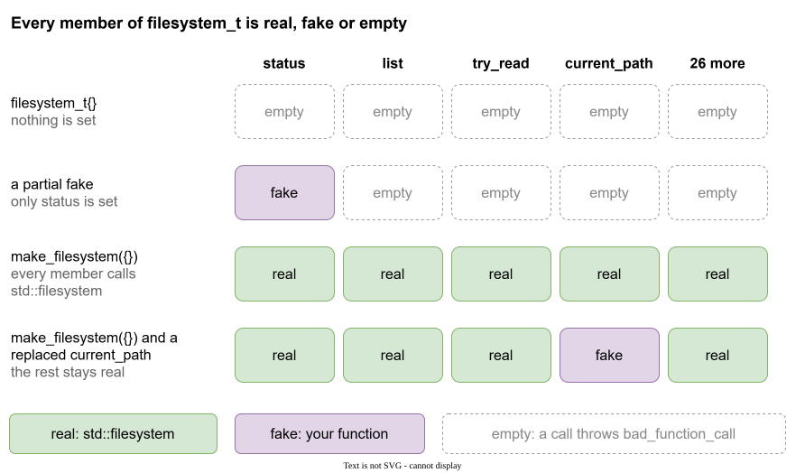
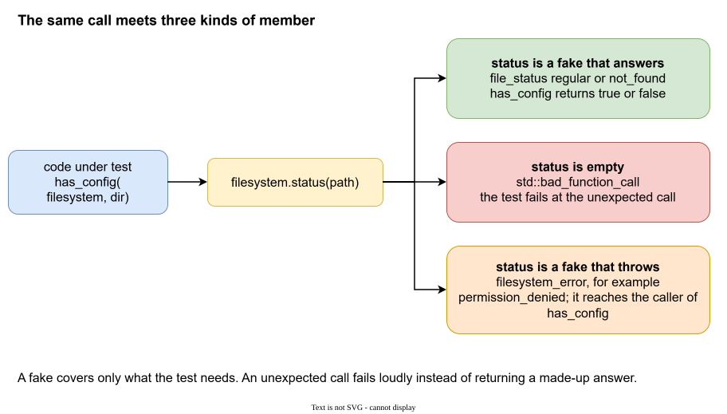
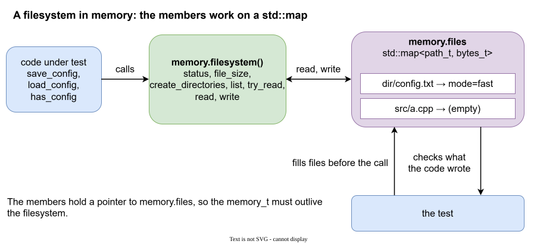

Replacing calls in a test¶
filesystem_t is a struct of std::function members. A test builds one and sets what the code under test needs. The code under test takes const filesystem_t&, so it works the same with the disk, a fake or a log.

The code on this page is in the example/ directory of the library: config_loader.hpp, memory_filesystem.hpp and main.cpp.
The code under test¶
// true when dir has a regular file config.txt
inline bool has_config(
const virtual_filesystem::filesystem_t& filesystem,
const virtual_filesystem::path_t& dir
)
{
return virtual_filesystem::is_regular_file(filesystem, dir / "config.txt");
}
// the text of dir/config.txt, or an empty string when there is none
inline std::string load_config(
const virtual_filesystem::filesystem_t& filesystem,
const virtual_filesystem::path_t& dir
)
{
return filesystem.try_read(dir / "config.txt").value_or("");
}
Nothing here says where the files are. In the program you pass make_filesystem({}). In a test you pass a fake.
has_config ends in a call of status. What happens to that call depends on what the test put in status:

The next sections show each case.
A partial fake¶
A default-constructed filesystem_t has every member empty. Set only the members that the code under test calls. has_config calls is_regular_file, which calls status, so one member is enough:
namespace fs = std::filesystem;
virtual_filesystem::filesystem_t filesystem;
filesystem.status = [](const virtual_filesystem::path_t& path)
{
return path == "dir/config.txt"
? fs::file_status{fs::file_type::regular}
: fs::file_status{fs::file_type::not_found};
};
example::has_config(filesystem, "dir"); // true
example::has_config(filesystem, "other"); // false
The fake answers by path, so one fake covers many cases.
Warning
Calling an empty member throws std::bad_function_call. This is useful in a test: a call that you did not expect fails loudly instead of returning a made-up answer.
virtual_filesystem::filesystem_t empty;
empty.file_size("a"); // throws std::bad_function_call
A fake that fails¶
A fake can throw std::filesystem::filesystem_error, the exception that std::filesystem throws. The failure reaches the code under test the way a real one would:
virtual_filesystem::filesystem_t denied;
denied.status = [](const virtual_filesystem::path_t& path) -> fs::file_status
{
throw fs::filesystem_error{
"status",
path,
std::make_error_code(std::errc::permission_denied)
};
};
example::has_config(denied, "dir"); // throws filesystem_error, path1() is "dir/config.txt"
Without the library a test cannot make "permission denied" without a real file that is locked for the user.
A filesystem that make_filesystem made catches errors of the real calls; it does not catch the exceptions of a fake that you set afterwards. See Errors and logging.
Replace one member of a real filesystem¶
make_filesystem returns an ordinary value. Replace a member of it when the rest should stay real:
auto filesystem = virtual_filesystem::make_filesystem({});
filesystem.current_path = []
{
return virtual_filesystem::path_t{"/work"};
};
filesystem.current_path(); // "/work", other members still use the disk
A filesystem in memory¶
When a test reads and writes files, one fake per call becomes long. memory_t of the example is a fake that keeps files in a std::map and fills seven members: status, file_size, create_directories, list, try_read, read and write.
struct memory_t
{
std::map<virtual_filesystem::path_t, virtual_filesystem::bytes_t> files;
virtual_filesystem::filesystem_t filesystem();
};

The members of filesystem() read and write files, so the memory_t must outlive the filesystem. Here is a piece of it, try_read and write:
result.try_read = [this](const vfs::path_t& path) -> vfs::bytes_ot
{
const auto found = files.find(path);
if (found == files.end())
{
return {};
}
return found->second;
};
result.write = [this](const vfs::write_t& args)
{
files[args.path] = args.bytes;
};
A test uses it with the code under test:
example::memory_t memory;
const auto filesystem = memory.filesystem();
example::load_config(filesystem, "dir"); // "": there is no file
example::save_config(filesystem, "dir", "mode=fast"); // writes dir/config.txt
example::load_config(filesystem, "dir"); // "mode=fast"
example::has_config(filesystem, "dir"); // true
filesystem.file_size("dir/config.txt"); // 9
You can look into memory.files to see what the code wrote, and fill it before the call to prepare input.
Note
memory_t is an example, not a part of the library. Directories are not stored. A memory filesystem for your tests should answer the calls your code makes and no more.
What a fake should answer¶
A fake replaces a call of std::filesystem, so it should answer the way std::filesystem does:
statusof a missing file isfile_type::not_found. It is not an error.file_sizeof a missing file throwsfilesystem_error.try_readof a missing file is an empty optional.readof a missing file throwsfilesystem_error.
The reference lists the result type of every member.